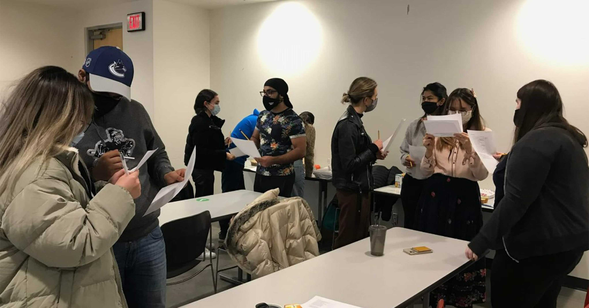

Women in Clean Tech is an SFU-Surrey based club aspiring to connect female students in STEM. Group members develop expertise with cutting-edge clean technologies through WICT's active online network and can also hone their technical skills by participating in clean technology design competitions.

SFU Student Energy engages in educational and advocacy campaigns in the SFU community in order toempower the next generation of leaders to promote the transition to a sustainable and equitable energy future.
SFU350 engages in direct-action campaigns to advocate for sustainable practices and ambitious climate policies at SFU. After solidifying the university's commitment to fossil fuel divestment, SFU350 is pushing SFU to more actively pursue initiatives related to climate change and climate justice.
Ban the Bottle SFU advocates for the reduced use of plastic products and commercialized water on campus, raises community awareness about the social, environmental and health impacts of bottled water and single-use plastics, and strives to make SFU a zero-waste institution.

SFU Student Energy engages in educational and advocacy campaigns in the SFU community in order toempower the next generation of leaders to promote the transition to a sustainable and equitable energy future.
Student Energy is a global youth-led organization empowering the next generation of leaders who are accelerating the transition to a sustainable, equitable energy future. We work with a network of 50,000 young people from over 120 countries to build the knowledge, skills, and networks they need to take action on energy. Student Energy collaborates with governments, companies, and organizations to facilitate meaningful youth engagement and mobilize resources to support youth-led energy solutions.